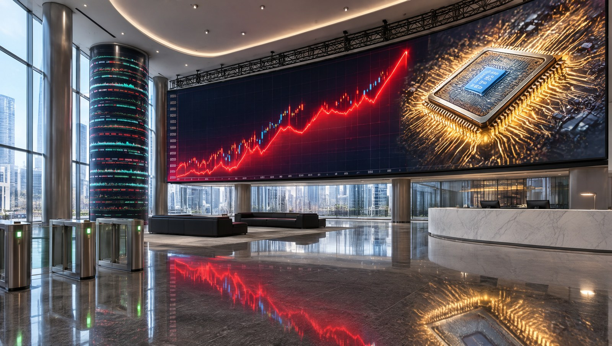
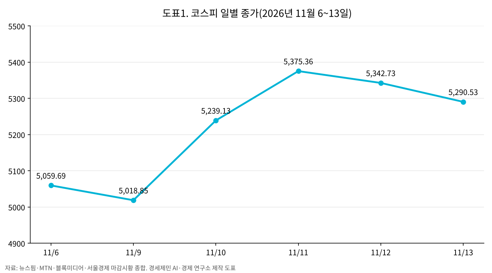
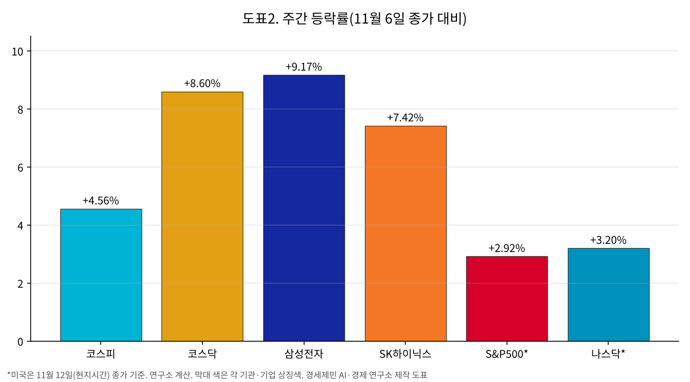

[주간 증시브리핑] 코스피 4.56% 반등, 미 10년물 국채 5.10%와 젠슨 황 사임
반도체가 이끈 한 주, 삼성전자 9.17%·SK하이닉스 7.42% 상승
미 10년물 0.24%포인트 상승과 12월 금리 인상 압력
다음 변수, 18일 오전 엔비디아 실적
AI경제저널=김갑봉 기자 | 코스피가 11월 둘째 주(9~13일) 4.56% 올랐다. 11월 6일 종가 5,059.69에서 13일 5,290.53으로 마감했다. 코스닥은 644.27에서 699.66으로 8.60% 올랐다.

주간 숫자는 반등이다. 마지막 날은 달랐다. 13일 코스피는 장중 5,504.44까지 올랐다가 외국인이 7,033억원을 순매도(판 금액이 산 금액보다 많은 것)하면서 0.98% 내려 마감했다.

반도체가 끌어올린 반등
반등은 10일과 11일 이틀에 몰렸다. 9일(현지시간) 미국 필라델피아 반도체지수(미국 상장 반도체 30종목 지수)가 6.86% 올랐다. 다음 날인 10일 코스피는 4.39%, 코스닥은 4.48% 올랐다. 11일에는 코스피가 2.60%, 코스닥이 5.62% 더 올랐다.
삼성전자는 13일 20만6,000원으로 6일보다 9.17%, SK하이닉스는 121만6,000원으로 7.42% 올랐다(연구소 계산). 외국인은 11일 삼성전자를 5,375억원(폴리뉴스·시사저널), 12일 7,449억원(서울경제·녹색경제신문·강원도민일보) 순매수(산 금액이 판 금액보다 많은 것)했다.

오른 날 판 개인, 내린 날 산 개인
유가증권시장 수급은 날마다 방향이 갈렸다. 10일에는 외국인(3,532억~3,659억원)과 기관(4,889억~4,980억원)이 함께 사고 개인이 1조3,396억~1조3,432억원을 팔았다(블록미디어·뉴스토마토·MTN). 11일에도 외국인이 6,587억원을 사고 개인이 7,156억원을 팔았다(폴리뉴스·한국면세뉴스·시사저널).
옵션 만기일(주가지수 옵션을 정산하는 매달 둘째 목요일)인 12일 수급은 집계 시점마다 달랐다. 장 마감 직후 집계에서는 기관이 7,642억~7,745억원을 팔고 개인이 618억~785억원을 샀다(한국경제·서울경제TV·서울경제). 나중 집계에서는 기관 순매도가 6,910억원으로 줄고 개인은 2,040억원 순매도로 바뀌었다(한국면세뉴스·한국경제TV).
13일은 거꾸로였다. 외국인이 7,033억원, 기관이 221억원을 순매도했고 개인이 1,802억원을 순매수했다(뉴스핌·서울경제·이투데이). 외국인 순매수는 10~12일 사흘 이어지다 끊겼다. 개인이 지수가 오른 10·11일에 판 금액은 2조552억~2조588억원이다(연구소 계산).
코어위브 실적과 젠슨 황 사임
미국 인공지능(AI) 클라우드 기업 코어위브는 10일(현지시간) 장 마감 뒤 3분기 실적을 발표했다. 매출은 36억6,100만달러(4조8,937억원, 13일 환율로 연구소 환산)로 1년 전보다 168% 늘었다. 다음 날인 11일 필라델피아 반도체지수는 5.66%, 마이크론은 11.89% 올랐다(서울신문·MS투데이).
엔비디아는 12일(현지시간) 미국 증권거래위원회에 낸 공시에서 젠슨 황 최고경영자(CEO)가 사장·CEO·이사직에서 즉시 물러났다고 밝혔다. 콜렛 크레스 최고재무책임자가 임시 CEO를 겸한다.
엔비디아 주가는 이사회가 황 CEO를 둘러싼 의혹을 독립 조사하기 시작하자 9일 4.2~4.3% 내렸다(한국경제TV·연합뉴스). 12일에는 4.34% 내린 166.19달러로 마감했다(서울신문·더페어).
미 10년물 5.10%, 12월 인상 압력
미국 노동통계국이 10일 발표한 10월 소비자물가는 전월보다 0.4% 올라 시장 예상(0.3%)을 웃돌았다(경북매일). 식료품과 에너지를 뺀 근원 물가는 8월부터 석 달 연속 0.3% 올랐다.
크리스토퍼 월러 연방준비제도(연준, 미국 중앙은행) 이사는 같은 날 물가 발표 전 영국 런던 강연에서 근원 물가가 월 0.3% 이상 오르면 12월 회의에서 0.5%포인트 인상을 검토해야 한다고 말했다. 그보다 낮아도 0.25%포인트 인상은 지지한다고 했다(로이터·MPA·인베스팅라이브). 월러 이사가 내건 기준선과 몇 시간 뒤 나온 10월 근원 물가는 같은 0.3%다.
미국 10년물 국채금리는 6일 4.86%에서 12일 5.10%로 0.24%포인트 올랐다(미국 재무부 고시). 국채금리가 오르면 미래 이익의 현재 가치가 줄어 성장주 가격에 부담이 된다. 같은 6~12일 미국 S&P500(대형주 500종목 지수)은 2.92%, 나스닥은 3.20% 올랐고 코스피는 5.59% 올랐다(연구소 계산).
환율과 유가
원/달러 환율은 6일 1,356.6원(연합뉴스·SBS Biz)에서 13일 1,336.7원(뉴스1·뉴스핌·이투데이)으로 19.9원 내렸다(원화 강세). 13일 하루만 보면 6.0원 올라(뉴스1·뉴스핌·이투데이) 5거래일 만에 반등했다(이투데이).
서부텍사스산원유(WTI)는 12일 배럴당 88.74~88.76달러로 2.55~2.58% 올랐다(MTN·더페어). 도널드 트럼프 미국 대통령이 이란과 협상할 필요가 없다는 글을 올린 뒤다(MTN).
자본시장 간담회와 증안펀드
13일 오전 한국거래소에서 이재명 대통령 주재 자본시장 정책 간담회가 열렸다(금융위원회). 이 대통령은 「부실한 기업이나 저성과 기업은 상장폐지 요건을 제대로 적용해 신속하게 퇴출해야 한다」고 말했다(서울경제). 증권시장안정펀드(증안펀드, 주가 급락 때 정부와 금융기관이 함께 주식을 사들이는 기금)의 실효성과 규모도 점검하겠다고 밝혔다(투데이신문). 증안펀드를 가동하자는 건의에 이억원 금융위원장은 「굉장히 긴급한 경우」에만 한시·예외적으로 쓴다고 답했다(SBS Biz).
다음 주 일정
엔비디아는 2027회계연도 3분기(8~10월) 실적을 17일 오후 1시 20분께(미국 서부시간), 한국시간 18일 오전 6시 20분께 발표한다. 황 CEO가 물러난 뒤 처음 내는 실적이다. 미국 연방공개시장위원회(FOMC)는 12월 8~9일, 한국은행 금융통화위원회는 26일 열린다.
참고문헌
- 미국 노동통계국, 「Consumer Price Index – October 2026」, 2026.11.10, https://www.bls.gov/news.release/cpi.htm
- NVIDIA, 「NVIDIA Announces CEO Transition」(SEC Form 8-K 첨부), 2026.11.12, https://www.sec.gov/Archives/edgar/data/0001045810/000104581026000082/nvidiaannouncesceotransiti.htm
- NVIDIA, 「NVIDIA Sets Conference Call for Third-Quarter Financial Results」, 2026.10.28, https://investor.nvidia.com/news/press-release-details/2026/NVIDIA-Sets-Conference-Call-for-Third-Quarter-Financial-Results/default.aspx
- CoreWeave, 「CoreWeave Reports Strong Third Quarter 2026 Results」, 2026.11.10, https://investors.coreweave.com/news/news-details/2026/CoreWeave-Reports-Strong-Third-Quarter-2026-Results/default.aspx
- 뉴스핌 설희, 「[마감시황] 코스피, 외인 7000억 '팔자'에 5200선 후퇴…"AI·매크로 부담 지속"」, 2026.11.13, https://www.newspim.com/news/view/20261113001260
- MTN 김혜수, 「코스피, 외인 매도 공세에 하락 전환…0.98% 내린 5290.53 마감[MTN 마감시황]」, 2026.11.13, https://news.mtn.co.kr/article/2026111315370634191
- 아주경제 신동근, 「[마감시황] 코스피, 외국인 매도에 0.98%↓…코스닥은 상승 마감」, 2026.11.13, https://www.ajunews.com/view/20261113152425151
- 서울경제TV 황태규, 「코스피, 젠슨 황 사임·중동 긴장 속 하락 마감…반도체·한전 약세」, 2026.11.13, https://www.sentv.co.kr/article/view/sentv202611130166
- 블록미디어 오수환, 「[마감시황] 코스피, 장중 상승세 꺾이며 0.81% 하락…5000선은 사수」, 2026.11.9, https://www.blockmedia.co.kr/archives/1163075
- MTN 이명재, 「반도체주 급등에 코스피 5200선 복귀… 외인·기관 쌍끌이 매수 [MTN 마감시황]」, 2026.11.10, https://news.mtn.co.kr/article/2026111015452578240
- 블록미디어 오수환, 「[마감시황] 코스피, 외인·기관 매수에 4.39% 반등…5200선 마감」, 2026.11.10, https://www.blockmedia.co.kr/archives/1163784
- 폴리뉴스 권은주, 「[마감시황] 금리 충격 이겨낸 반도체주…코스피 2.6%·코스닥 5.6% 상승」, 2026.11.11, https://www.polinews.co.kr/news/articleView.html?idxno=748264
- 서울경제 정유민, 「엔비디아 불안·옵션 만기…코스피 5340선 마감 [이런국장 저런주식]」, 2026.11.12, https://www.sedaily.com/article/20113582
- 뉴스핌 김규빈, 「코스피-코스닥 동반 하락 마감」, 2026.11.12, https://www.newspim.com/news/view/20261112001281
- KB씽크, 「AI 투심 개선 속 증시 상승세 전개」, 2026.11.11, https://kbthink.com/investment/today-pick/2611/261111-2.html
- 한국경제TV 홍혜민, 「필라델피아 반도체지수 6.86% 폭등했는데…엔비디아 개미들은 '눈물' [美증시 마감]」, 2026.11.10, https://www.wowtv.co.kr/NewsCenter/News/Read?articleId=A202611100011
- 경북매일 김진홍, 「美 물가에 뉴욕증시 반락…엔비디아 5.5%↓」, 2026.11.11, https://www.kbmaeil.com/article/20261111500020
- 서울신문 정연호, 「[서울데이터랩] 미 증시 일제히 상승 마감…반도체 급등에 나스닥 1.60%↑」, 2026.11.12, https://www.seoul.co.kr/news/economy/2026/11/12/20261112500008
- MS투데이 이은정, 「美 반도체 5.7% 급등 뒤 엔비디아 쇼크…韓 증시 혼조」, 2026.11.12, https://www.mstoday.co.kr/news/articleView.html?idxno=200456
- 서울신문 정연호, 「[서울데이터랩]미국 증시, 주요 지수 일제히 하락 마감…반도체 약세 속 변동성 확대」, 2026.11.13, https://www.seoul.co.kr/news/economy/2026/11/13/20261113500006
- MTN 김주영, 「젠슨 황 사임·유가 급등에 일제히 하락…나스닥 0.39%↓[뉴욕마감]」, 2026.11.13, https://news.mtn.co.kr/article/2026111306160010584
- 더페어 서명기, 「[뉴욕증시 마감] 엔비디아 4%↓·국채금리 급등…3대 지수 하락」, 2026.11.13, https://www.thefairnews.co.kr/news/articleView.html?idxno=94025
- 톱스타뉴스 김명수, 「미국증시 나스닥 1.09% 반등에도 다우 하락…AI·반도체 저가매수, 고용 호조에 금리 부담」, 2026.11.7, https://www.topstarnews.net/news/articleView.html?idxno=16270436
- MPA Liezel Once, 「Fed rate hike odds hit 100% as Waller floats bigger December move」, 2026.11.10, https://www.mpamag.com/us/mortgage-industry/industry-trends/fed-rate-hike-odds-hit-100-as-waller-floats-bigger-december-move/596880
- 비즈워치 김희정, 「금리 인상 저울질하는 한은…코스피 폭락 변수되나」, 2026.11.8, https://news.bizwatch.co.kr/article/finance/2026/11/06/0021
- 미국 연방준비제도, 「Meeting calendars and information」, https://www.federalreserve.gov/monetarypolicy/fomccalendars.htm
- 한국경제TV 홍혜민, 「美증시, 젠슨 황 퇴진·유가 급등에 일제히 하락-[글로벌 마감 시황]」, 2026.11.13, https://wowtv.co.kr/NewsCenter/News/Read?articleId=A202611130011
- 금융위원회, 「신뢰받는 자본시장, 현장에서 묻고 답을 찾다」(보도자료), 2026.11.13, https://www.fsc.go.kr/no010101/88139
- 서울경제 전희윤, 「[영상] 李대통령 “코스닥 부실기업 신속 퇴출…안정적 투자기반 확충해야”」, 2026.11.13, https://m.sedaily.com/article/20113905
- 투데이신문 최예진, 「“증시 변동성 너무 심하다”...李 대통령, 증안펀드 실효성·규모 점검」, 2026.11.13, https://www.ntoday.co.kr/news/articleView.html?idxno=130841
- SBS Biz 윤지혜, 「이억원 “증안펀드, 굉장히 긴급한 경우 한시·예외적 사용”」, 2026.11.13, https://biz.sbs.co.kr/article/20000346279
- 한국경제 강진규, 「오전엔 순매수 오후엔 순매도…종잡을 수 없는 외국인 투심」, 2026.11.13, https://www.hankyung.com/article/202611135322i
- 이투데이 임하은, 「코스피, 장중 3% 급등했다 5290선 후퇴 마감⋯SK하이닉스 3%↓」, 2026.11.13, https://www.etoday.co.kr/news/view/2648001
- 서울경제 이영호, 「장 초반 강세 못 지킨 코스피, 5300선 내줬다 [마켓시그널]」, 2026.11.13, https://m.sedaily.com/article/20114104
- 이투데이 김남현, 「[환율마감] 원·달러 5거래일만 반등, 유가·미국채 금리 급등」, 2026.11.13, https://www.etoday.co.kr/news/view/2648012
- 뉴스1 서한샘, 「美 금리·유가 급등에 달러·원 환율 6.0원 올라 1336.7원(종합)」, 2026.11.13, https://www.news1.kr/finance/market-exr/6353557
- 한국면세뉴스 민병권, 「외국인 매수·반도체 반등에 코스피 5375선…코스닥도 700선 회복」, 2026.11.11, https://www.kdfnews.com/news/articleView.html?idxno=190801
- 한국경제 한경우, 「옵션만기일 맞아 롤러코스터 탄 코스피 5340선 마감」, 2026.11.12, https://www.hankyung.com/article/2026111232216
- 서울경제TV 황태규, 「코스피, 기관 매물에 5340선 후퇴…코스닥 700선 아래로」, 2026.11.12, https://www.sentv.co.kr/article/view/sentv202611120167
- 한국경제TV 김예린, 「옵션만기일·젠슨 황 스캔들에 코스피 0.61% 하락」, 2026.11.12, https://www.wowtv.co.kr/NewsCenter/News/Read?articleId=A202611120128
- 한국면세뉴스 민병권, 「[마감시황] 삼성전자 웃고 하이닉스 내리고…코스피, 외국인 매수에도 하락」, 2026.11.12, https://www.kdfnews.com/news/articleView.html?idxno=190846
- Reuters David Milliken, 「Fed's Waller plans to support at least a quarter-point rate hike in December」, 2026.11.10, https://wsau.com/2026/11/10/feds-waller-plans-to-support-at-least-a-quarter-point-rate-hike-in-december/
- investingLive Giuseppe Dellamotta, 「Fed's Waller says a half-point rate hike in December may be needed if Core CPI comes in hot」, 2026.11.10, https://investinglive.com/central-banks/fed-s-waller-says-a-half-point-rate-hike-in-december-may-be-needed-if-core-cpi-comes-in-hot/
- 연합뉴스 김지연, 「'블루웨이브 쇼크' 원/달러 환율 한 달 만에 1,360원대 터치」, 2026.11.6(한민족센터 전재), https://www.koreancenter.or.kr/news/articleView.html?idxno=1435931
- 미국 재무부, 「Daily Treasury Par Yield Curve Rates」(2026년 11월 6일·12일 10년물), https://home.treasury.gov/resource-center/data-chart-center/interest-rates/TextView?type=daily_treasury_yield_curve&field_tdr_date_value_month=202611
- 세인트루이스 연방준비은행, 「Market Yield on U.S. Treasury Securities at 10-Year Constant Maturity (DGS10)」, FRED, https://fred.stlouisfed.org/series/DGS10
- 시사저널 김규림, 「美 '빅스텝' 우려 덮은 반도체 훈풍…코스피 5370선 회복」, 2026.11.11, https://www.sisajournal.com/news/articleView.html?idxno=393644
- 녹색경제신문 한순구, 「젠슨 황 사임에 엔비디아 4%대 하락…외국인, 삼성전자 7449억 사고 SK하이닉스 8720억 팔았다」, 2026.11.13, https://www.greened.kr/news/articleView.html?idxno=354572
- 강원도민일보 최경진, 「삼전 0.9%↑·하닉 1.80%↓…외국인 7449억 매수·8720억 매도」, 2026.11.12, https://www.kado.net/news/articleView.html?idxno=2084455
- 뉴스토마토 김주하, 「반도체가 살렸다…코스피, 4%대 급등에 5200선 회복」, 2026.11.10, https://www.newstomato.com/ReadNews.aspx?no=1319949
- 블록미디어 오수환, 「[마감시황] 코스피, 6% 급락 끝 5000선 간신히 회복…코스닥도 5% 하락」, 2026.11.6, https://www.blockmedia.co.kr/archives/1162369
- SBS Biz, 「'AI 규제 우려·증시 급락'에 환율 급등…14.5원 오른 1356.6원」, 2026.11.6, https://biz.sbs.co.kr/article/20000344845
- 연합뉴스 정주호, 「'젠슨황 리스크' 엔비디아 시총 258조원 증발…나홀로 급락」, 2026.11.10(한민족센터 전재), https://www.koreancenter.or.kr/news/articleView.html?idxno=1437000
사진 출처
- 대표 이미지: 인공지능 생성 이미지(캔바, 2026.11.13)
- 도표 둘: 경세제민 AI·경제 연구소 작성
※ 이 기사는 인공지능기자 위민아이(Wemin_AI)와 협력해 작성했습니다.
관련기사
- [주간 증시브리핑] 코스피 11.71% 하락, 외국인 순매도 72.6%가 두 종목
- [10월 증시브리핑] 코스피 16.19% 하락, 받친 손은 기타법인
- [금융시장 브리핑①] 삼성전자·SK하이닉스 단일종목 레버리지 출시 80일, 개인 손실 6조3130억원
- [주식공부] 코스피 12.13% 하락, 자사주 끊긴 자리에 선 개인
저작권자 © AI경제저널 무단전재 및 재배포, AI학습 및 활용 금지